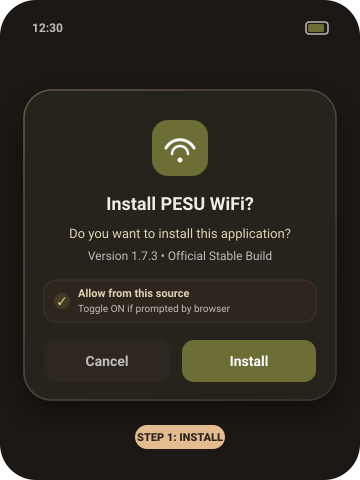

Step 1
Download & Sideload the APK
Install the signed release APK directly onto your Android device without third-party app stores.
- Download pesu-wifi-v1.7.3-stable.apk from the official release page.
- When opening the file, Android may warn about installing unknown apps.
- Tap Settings and toggle on "Allow from this source" for your browser or file manager.
- Tap Install to complete setup.
💡 Safe & Clean: Built with Android Keystore encryption, zero trackers, and completely open source.
